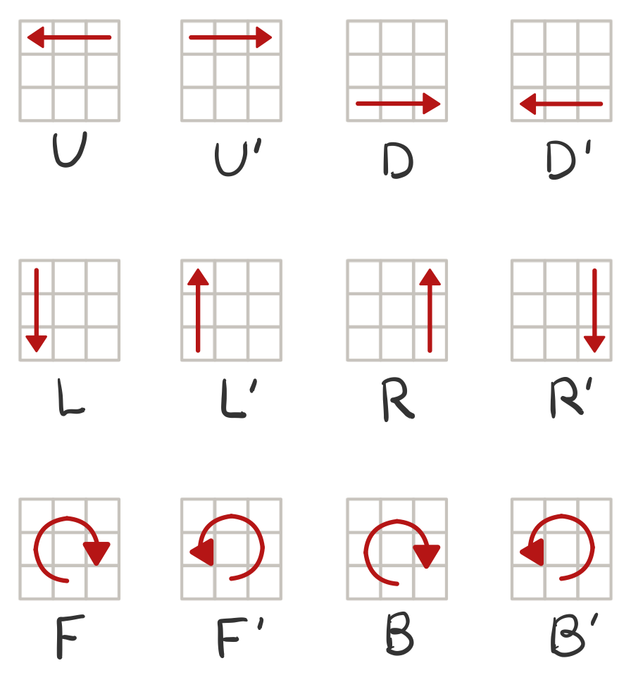

3단계: 루빅스 큐브 구현하기
결과 보기
조작방법
U
- 앞면의 가장 윗줄을 왼쪽으로 한 칸 밀기
U'
- 앞면의 가장 윗줄을 오른쪽으로 한 칸 밀기
D
- 앞면의 가장 아랫줄을 오른쪽으로 한 칸 밀기
D'
- 앞면의 가장 아랫줄을 왼쪽으로 한 칸 밀기
L
- 앞면의 가장 왼쪽 줄을 아래로 한 칸 밀기
L'
- 앞면의 가장 왼쪽 줄을 위로 한 칸 밀기
R
- 앞면의 가장 오른쪽 줄을 위로 한 칸 밀기
R'
- 앞면의 가장 오른쪽 줄을 아래로 한 칸 밀기
F
- 앞면을 시계방향으로 90° 밀기
F'
- 앞면을 반시계방향으로 -90° 밀기
B
- 뒷면을 시계방향으로 90° 밀기
B'
- 뒷면을 반시계방향으로 -90° 밀기
Q
- 프로그램 종료
